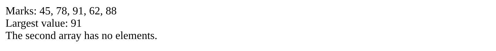

Write a user-defined function to find the largest number in an array.
Program 5.6: Finding the Largest Value in an Array Using a User-Defined Function
Concepts used
User-defined function, an array as a parameter, count(), foreach, if, return.
Test data: Marks: 45, 78, 91, 62 and 88. An empty array is also passed to show the result for no elements.
Logic
- Define findLargest(
$numbers). - If the array is empty, return null.
- Take the first element as the largest value.
- Compare every element with the largest value and replace the largest value whenever a greater element is found.
- Return the largest value.
- Call the function and display the result.
Code
<?php// Returns the largest value in an array, or null if the array is emptyfunction findLargest($numbers){ if (count($numbers) == 0) { return null; } $largest = $numbers[0]; // initial largest value foreach ($numbers as $value) { if ($value > $largest) { $largest = $value; // a greater value has been found } } return $largest;}?><!DOCTYPE html><html lang="en"><head> <meta charset="UTF-8"> <title>Largest Value in an Array</title></head><body> <?php $marks = [45, 78, 91, 62, 88]; echo "Marks: " . implode(", ", $marks) . "<br>"; echo "Largest value: " . findLargest($marks) . "<br>"; $empty = []; $result = findLargest($empty); if ($result === null) { echo "The second array has no elements."; } ?></body></html>
Output
These are real screenshots, taken by running the program with the test data.

Understanding the output
The value 91 is the largest of the five marks, found by the comparisons traced in Table 5.6. The last line shows that the function handled an empty array safely instead of trying to read a first element that does not exist.
Table 5.6: Trace of findLargest() for the Marks Array
| Element Compared | $value > $largest | $largest After Comparison |
|---|---|---|
| Start | — | 45 (first element) |
| 45 | false | 45 |
| 78 | true | 78 |
| 91 | true | 91 |
| 62 | false | 91 |
| 88 | false | 91 |
How it works
The array $marks is passed to findLargest(), where it is received in the formal parameter $numbers. The array has five elements, so the function continues. It takes the first element, 45, as $largest. The loop then compares each element in turn: 78 is greater than 45, so $largest becomes 78; 91 is greater than 78, so it becomes 91; 62 and 88 are not greater than 91, so no change is made. The function returns 91. In the main part, the built-in function implode() joins the elements of the array with commas so that the marks can be displayed on one line. For the empty array, the function returns null, which is tested with ===.
Run it yourself
Real PHP 8.3 runs inside your browser (nothing is sent to a server). Forms, links, cookies and sessions work as they do in XAMPP. The first run downloads PHP, so it needs internet and takes a few seconds.
Try this:
- Add the mark 95 to the array.
- Change all the marks to negative numbers.
Running it in XAMPP
Save the file in C:\xampp\htdocs\phpbook\ch05 and open http://localhost/phpbook/ch05/largest.php.
Common mistakes
- Starting with
$largest= 0, which gives 0 for an array such as [-4, -9, -2] whose largest value is -2. - Writing return
$largest; inside the loop, which ends the function after the first comparison. - Using < instead of > in the comparison, which finds the smallest value instead.
- Reading
$numbers[0]without checking for an empty array, which produces an Undefined array key 0 warning. - Functions organise code within one file. The same idea of writing code once and reusing it can be extended across files through file inclusion, as explained in Section 4.6.
- FLASHBACK
- An array stores many related elements under one variable name.
- Every array element consists of a key that identifies a corresponding value.
- Keys within one PHP array are unique, so assigning another value to an existing key replaces the earlier value.
- The expressions array("PHP", "MySQL") and ["PHP", "MySQL"] create equivalent arrays.
- The statement
$a[]=$valueadds a value at the next available integer index. - The statement
$a["key"]=$valueadds a new keyed element or replaces the value already stored under that key. - An indexed array normally uses consecutive integer indexes beginning with zero.
- The last position in a consecutively indexed array is count(
$a) - 1. - An associative array uses meaningful keys, such as the key name in ["name" => "Riya"].
- String keys in a PHP array are case-sensitive, so differently capitalised keys identify different elements.
- The
isset()function checks whether an array key exists and holds a value other than null. - The
array_key_exists()function checks whether an array key exists even when its value is null. - A multidimensional array stores one or more arrays as elements of another array.
- The expression
$marks[$row][$column] selects a value by its row and column positions. - The expression
$results[0]["PHP"] selects a keyed value from the first inner array. - The foreach (
$aas$v) form visits every value of an array in turn. - The foreach (
$aas$k=>$v) form visits every element while providing both its key and its value. - Nested foreach loops can process the rows and columns of a table represented by a multidimensional array.
- The
each()function was deprecated in PHP 7.2 and removed in PHP 8.0; current code uses foreach instead. - The
current()function reads the value at an array's internal pointer without moving that pointer. - The
next()function advances the internal pointer by one element. - The
prev()function moves the internal pointer back by one element. - The
end()function moves the internal pointer directly to the last element. - The
reset()function moves the internal pointer directly to the first element. - A pointer movement beyond either end of an array returns false.
- A foreach loop does not disturb the array's internal pointer in PHP 8.
- GLOSSARY
- Array: A variable that stores several values, each identified by a key.
- Element: One key-value pair stored in an array.
- Key / Index: The identifier of an element; an integer key is called an index.
array()Construct: The original PHP form for creating an array.- Indexed Array: An array whose keys are integers starting from 0.
- Associative Array: An array whose keys are strings chosen by the programmer.
- Multidimensional Array: An array whose elements are arrays.
- Array Iteration (Traversal): Visiting each element of an array in turn.
each(): A historical function that returned the current key-value pair and advanced the pointer; removed in PHP 8.0.- Internal Pointer: A marker that indicates the current element of an array.
- Array Pointer Function: A function that reads or moves the internal pointer, such as
current()ornext(). - Current Element: The element of an array at which the internal pointer stands; returned by
current(). - Next Pointer: The movement of the internal pointer forward by one element with
next(), which returns the new current element or false beyond the end. - Previous Pointer: The movement of the internal pointer back by one element with
prev(), which returns the new current element or false before the beginning. - Reset Pointer: The movement of the internal pointer to the first element with
reset(), which returns that element. - End Pointer: The position of the internal pointer at the last element of an array, reached with
end(), which returns that element. - QUESTIONS
- Short Answer Questions
- Q1.What is an indexed array? How is its last element accessed?
- Ans.An indexed array is an array whose keys are integers assigned automatically from 0. In
$subjects= ["PHP", "MySQL", "HTML"], "PHP" has index 0 and "HTML" has index 2. The last element is accessed with the index count($subjects) - 1, or with the pointer function end($subjects). - Q2.What is an associative array? Give an example.
- Ans.An associative array is an array whose keys are strings chosen by the programmer, each joined to its value with =>. For example,
$student= ["name" => "Riya", "course" => "BCA"]; stores a record, and$student["course"]gives "BCA". - Q3.What is a multidimensional array? How is a nested element accessed?
- Ans.A multidimensional array is an array whose elements are themselves arrays, such as a table of marks. A nested element is accessed with one key for each level. In
$marks= [[78, 85], [91, 74]], the expression$marks[1][0] gives 91, the first value of the second row. - Q4.What is a key in an array? Can two elements have the same key?
- Ans.A key is the identifier of an array element, through which its value is reached. It may be an integer or a string. Two elements cannot have the same key; assigning a value to an existing key replaces the old value.
- Q5.Write two ways of creating the array of courses BCA and BBA. Are they different?
- Ans.The array can be created as
$courses= array("BCA", "BBA"); using the traditionalarray()construct, or as$courses= ["BCA", "BBA"]; using the bracket form. Both create exactly the same indexed array; the bracket form is shorter. - Q6.Write the two forms of the foreach loop. What does foreach (["A" => 1, "B" => 2] as
$k=>$v) { echo "$k$v"; } print? - Ans.The two forms are foreach (
$arrayas$value) and foreach ($arrayas$key=>$value). The given loop places each key in$kand each value in$v, so it prints A1 B2 . - Q7.What is the status of
each()in PHP 8? - Ans.
each()is an older function that returned the current key-value pair of an array and moved the internal pointer forward. It was deprecated in PHP 7.2 and removed in PHP 8.0, so calling it in PHP 8 stops the script with Call to undefined functioneach(). Its traversal loops are written with foreach in PHP 8. - Q8.What does
current()do? What is the output of$c= ["Red", "Green", "Blue"]; next($c); echo current($c);? - Ans.
current()returns the value of the element at which the internal pointer stands, without moving the pointer. In the given code,next()moves the pointer from "Red" to "Green", socurrent()returns and prints Green. - Q9.Are array("PHP", "MySQL") and ["PHP", "MySQL"] different? Explain.
- Ans.They are not different. Both create the same indexed array;
array()is the traditional construct, and the bracket form [] is the shorter equivalent used in current programs. - Q10.After
$a= ["PHP", "MySQL"];$a[]= "HTML";, what are count($a) and the index of "HTML"? - Ans.count(
$a) is 3, and "HTML" has the index 2, because$a[]adds an element at the next integer index after 0 and 1. - Q11.Differentiate between
isset()andarray_key_exists()for checking an array key. - Ans.isset(
$a["key"]) returns true only if the key exists and its value is not null. array_key_exists("key",$a) returns true if the key exists, even when its value is null. - Q12.How is a traversal loop written with
each()in older code rewritten for PHP 8? - Ans.An older loop such as while (list(
$k,$v) = each($a)) { ... } is rewritten as foreach ($aas$k=>$v) { ... }. Noreset()is needed, because foreach always starts from the first element;each()itself does not exist in PHP 8. - Long Answer Questions
- Q1.What are arrays? Explain indexed, associative and multidimensional arrays with examples and compare them.
- Ans.Refer Sections 5.1 and 5.3 to 5.5.
- Q2.Explain the methods of creating and traversing arrays in PHP. How should a legacy
each()loop be rewritten in PHP 8? - Ans.Refer Sections 5.2, 5.6 and 5.7.
- Q3.What is the internal array pointer? Explain the functions
current(),next(),prev(),reset()andend()with a program. - Ans.Refer Section 5.8.
- Functions
- A program that calculates the GST on a price at three different places must repeat the same calculation three times. If the GST rate changes, every copy must be found and corrected, and a single missed copy produces a wrong bill. In the same way, a website whose every page begins with the same college heading must repeat that heading in every file.
- This brings us to an important question: how can a block of PHP code be written once and used wherever it is needed, whether within one file or across many files? PHP answers this question in two ways. A function gives a name to a block of statements so that the block can be run whenever the name is called, and a file inclusion statement inserts the contents of one PHP file into another.
- Functions organise reusable statements into named units. PHP provides built-in functions and supports user-defined functions with parameters, return values, and defined variable scope. The include and require constructs extend reuse across files and differ in their behaviour when a file is missing.
Viva questions
What is a user-defined function?
function keyword, to be called wherever it is needed.Why does findLargest() start with the first element and not with 0?
Which built-in function does the same job?
max($numbers).